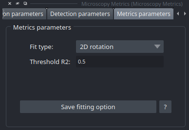

Metrics Widget
The Metrics Widget displays calculated metrics and allows users to select the fitting method for their analysis. The choice of fitting method significantly impacts the accuracy and performance of the PSF (Point Spread Function) analysis.
Metrics Parameters
- This section allows users to select the type of fit for their analysis. Each method has its own advantages and limitations:
1D : fastest kind of fit, but most of aberration informations are lost.
2D : Based on 1D parameters to make a 2D fit, good fitting, but no information about the orientation (tilt aberration) of the PSF.
2D Ellips : Based on PSFj’s 2D fit, better representation of the orientation (tilt aberration) of the PSF, but less stable than 2D fit.
2D Rotation : Based on 2D fit, but with a rotation of the PSF to fit the orientation of the PSF, better representation of the orientation (tilt aberration) of the PSF.
3D : Slowest method, but fit all of the ROI despite of a bad fit at profiles.
3D Rotation : Based on 3D fit, but with a rotation of the PSF to fit the orientation of the PSF, better representation of the orientation (tilt aberration) of the PSF.
Prominence : Based on Bead Analyzer’s method, not a fit, but a good estimation of the FWHM in a fast way, but not enough accurate FWHM estimation.
{kind=link}
